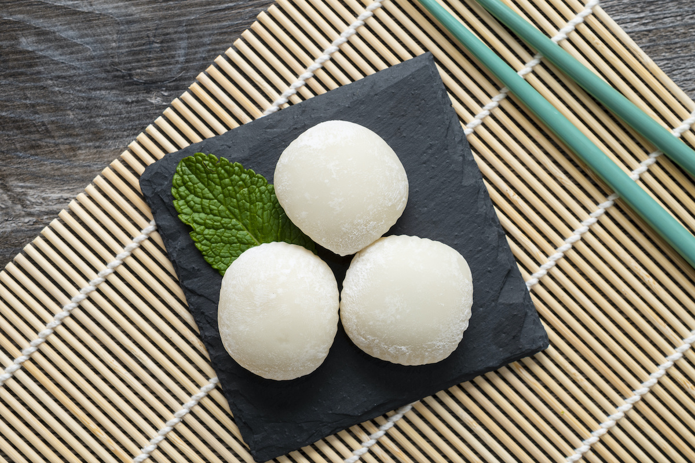

Kibidango

Description
Kibi dango are millet dumplings that originated in Japan's Okayama Prefecture.
Kibi dango look and taste similar to mochi, but these confections are traditionally made with millet flour,
not sweet rice flour.
Ingredients
- ⅓ cup takakibiko (millet flour)
- ¾ teaspoon potato starch
- ¼ cup kinako (soybean flour)
- ¼ cup brown sugar
- Pinch of salt
Directions
- In a medium bowl, whisk millet flour and potato starch to combine.
- Add ¼ cup boiling water.
- Using a rubber spatula, mix until the dough almost comes together.
- Use your hands to knead the dough into one solid mass.
- Pinch off small pieces of dough, about ½ inch in diameter.
- In a separate medium bowl, whisk together soybean powder, sugar, and salt.
- Transfer to a shallow bowl.
- Bring a medium pot of water to a boil over medium heat.
- Add the Kibi dango dough balls and continue to cook over medium-low heat until the Kibi dango float, then cook one minute longer.
- Transfer the balls to a bowl using a slotted spoon or small fine mesh strainer.
- Toss the Kibi dango in the soybean powder to coat.
- For a traditional preparation, arrange Kibi dango in groups of three on small skewers or toothpicks.